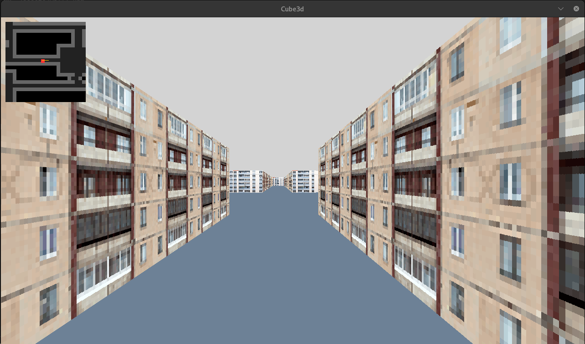
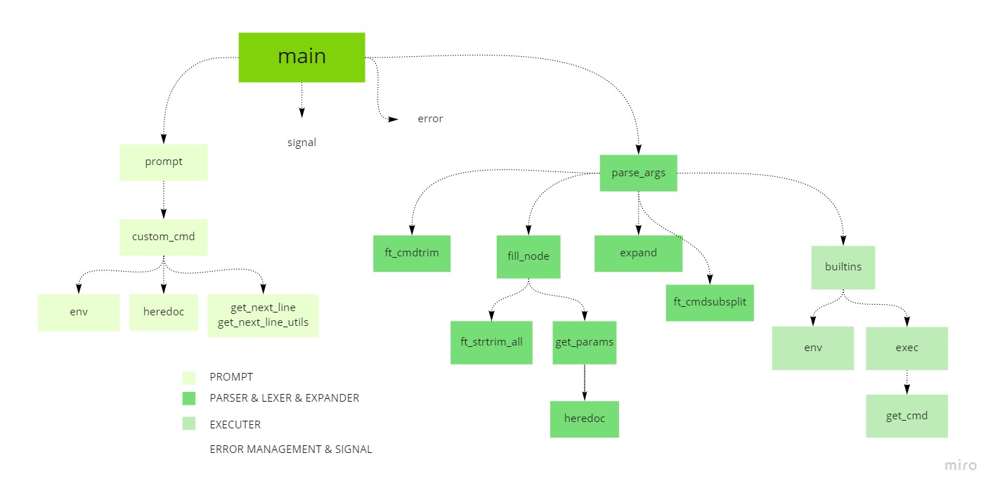
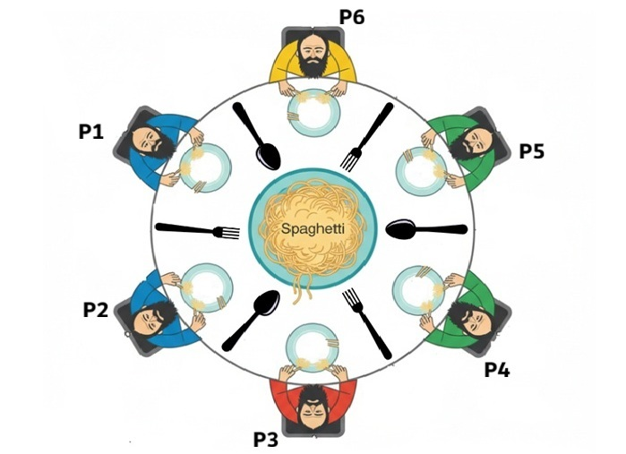
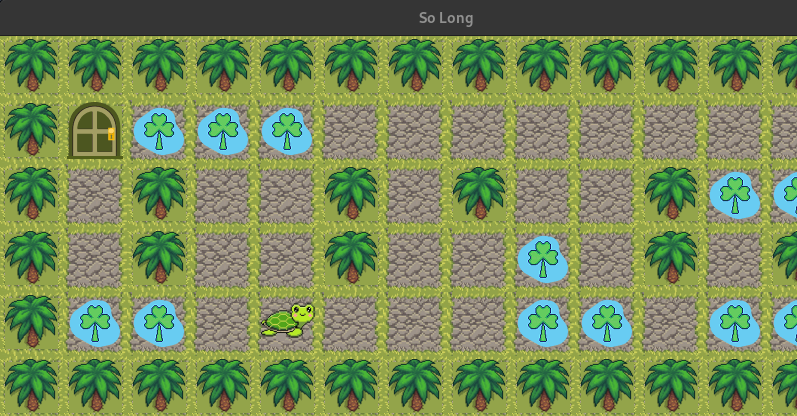
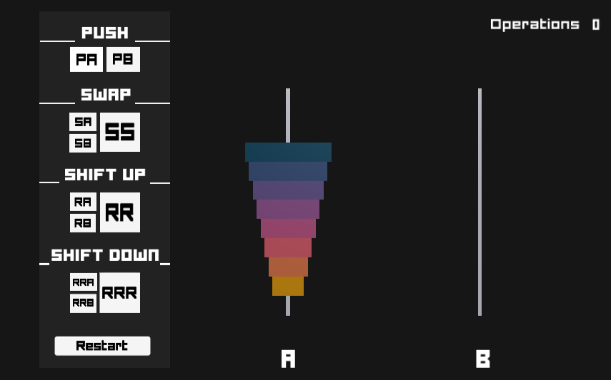
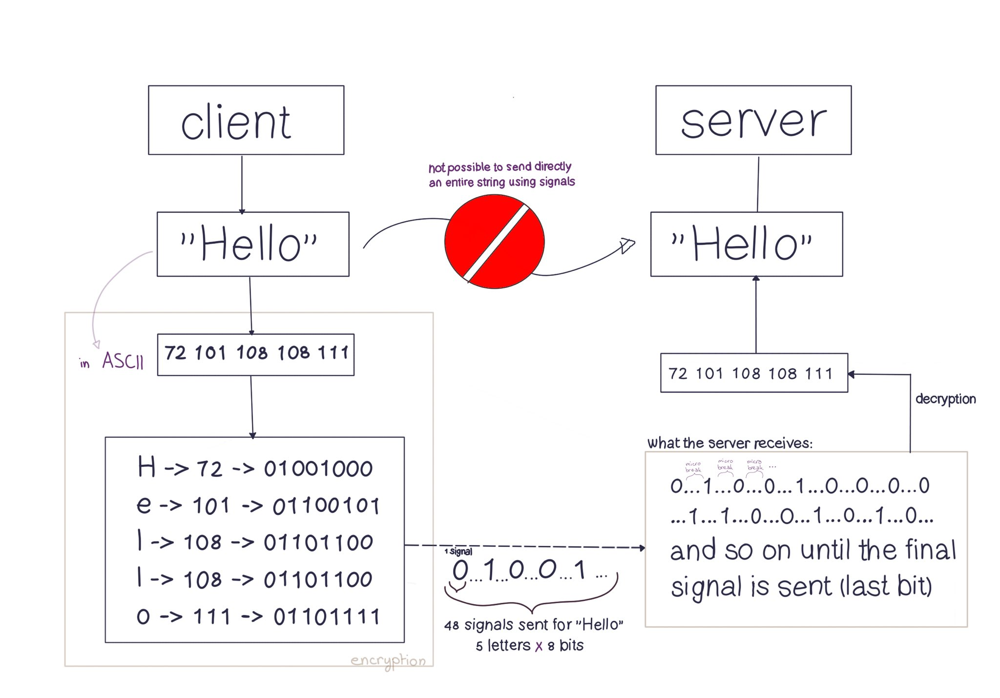

Cub3D
This project is a simple 3D engine in C using raycasting. It renders a first-person view from a 2D map, handling player movement, textures, and real-time drawing to simulate a 3D environment.

This project is a simple 3D engine in C using raycasting. It renders a first-person view from a 2D map, handling player movement, textures, and real-time drawing to simulate a 3D environment.

This project is a simple Unix shell implementation in C. It handles command execution, pipes, and redirections while managing processes and signals, focusing on parsing input and replicating core shell behavior.

This project implements the Dining Philosophers problem in C using threads and mutexes. Each philosopher runs as a thread, managing shared resources while avoiding data races, deadlocks, and ensuring proper timing and termination.

This project is a 2D game built in C using a minimal graphics library. It involves navigating a player through a map, collecting items, and reaching an exit while handling movement, rendering, and basic game logic.

This project is an implementation of a sorting algorithm in C using a limited set of stack operations. It focuses on efficiently sorting data by optimizing moves, working with two stacks, and applying algorithmic thinking to minimize the number of operations.

This project is a small communication program in C using Unix signals. It allows a client and server to exchange messages by encoding data into signals, focusing on process communication, signal handling, and data transmission.